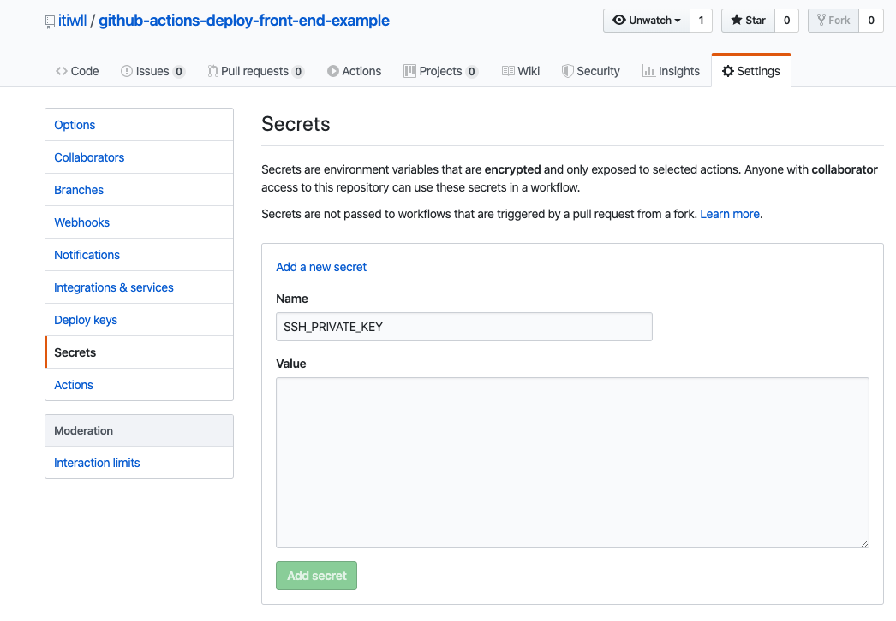

Github Actions 简介
GitHub Actions 是 Github 推出的一项服务。提供了虚拟服务器环境和 Actions 市场，用于 github 上的项目进行持续集成。这对于 Github 上公开的仓库是免费的，私有仓库有服务器运行时间和存储空间的限制，具体请看 about billing for github actions。
教程
下面介绍怎么如使用 GitHub Actions 部署一个前端项目到 linux 服务器上。
建立 workflow 配置文件
在仓库的根目录中创建文件夹 .github/workflows。在此文件夹中创建一个 .yml 后缀的文件。
文件内容：
1 | name: CI |
指定触发事件
我们以推送到 master 分支为例：
1 | on: |
更多触发方式参考 Triggering a workflow with events 和 Workflow syntax for GitHub Actions。
配置 jobs 和 build
事件可以触发的多个 job，这里我们添加一个 build job, 指定运行环境。
1 | jobs: |
配置 steps
在 build 下配置 steps。
1 | steps: |
获取源码
使用 Actions 市场 里的 actions/checkout 获取仓库代码，
1 | - name: Checkout |
安装模块和构建
使用 npm 安装模块和运行 build script。
1 | - name: Build |
部署
我们要使用 rsync 命令来同步构建好的文件目录到到发布目标服务器。
首先要准备可以在目标服务器上发布的私钥和 known-hosts，添加到仓库设置的 Secrets 中，命名为 SSH_PRIVATE_KEY 和 KNOWN_HOSTS_TEST 这样可以避免被暴露而在配置中使用。用 shimataro/ssh-key-action 安装私钥到 Github Action 的虚拟服务器。

1 | - name: Install SSH key for deploy |
使用 rsync 命令同步发布文件夹。
1 | - name: Deploy |
推送代码
接下来推送代码到 master 分支即可执行这个 workflow ，将项目部署到服务器。可以在仓库的 Actions 菜单查看运行日志。